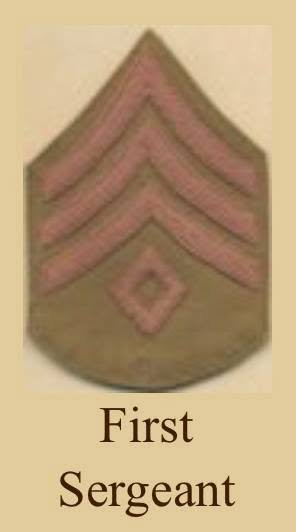
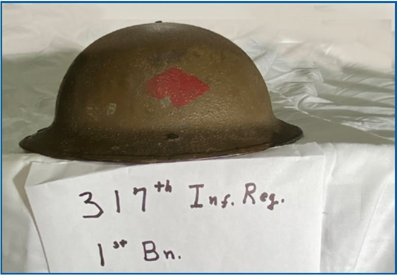
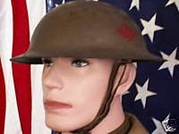
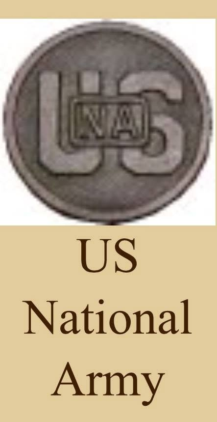

Not one of the three men in this story was an officer. This is what that meant.

It is easy to read sergeant and picture something minor. In an American infantry company of 1918 it was nothing of the kind, and understanding the job is the difference between following what happened in October and merely reading it.
A company on paper was about 250 men under a captain: four platoons, each of about sixty, each split into sections and squads. The officers set the task. Everything below that — the moving, the feeding, the ammunition, the casualties, the knowing of names — ran on sergeants.
A full chart of how a 1918 rifle company was organised is included separately for anyone who wants the detail.
The First Sergeant was the senior enlisted man in the company and, in practice, the person who made it work. He held the roster. He knew every man by name. He made the morning report — the daily legal record of who was present, sick, wounded, dead or absent. When an officer wanted something done, he told the First Sergeant, and the First Sergeant made it happen.
David Bryant was made First Sergeant of Company D on 10 April 1918 by Order 2, Paragraph 1 — the company’s own morning report records it in the clerk’s hand. He was twenty-four years old and responsible for about two hundred and fifty men.
A platoon of about sixty men was commanded by a lieutenant and run by its sergeant. That distinction is the whole of it. The lieutenant carried the authority and the orders; the sergeant carried the platoon — who was fit, who was shaky, who had the ammunition, who had not slept, where every man was and what he was to do next.
And when the lieutenant was hit, the sergeant had the platoon. This was not an exceptional arrangement. It was the expected one, because officers were the most visible people on a battlefield and were killed accordingly.
The 80th Division marked its men on their steel helmets. A shape gave the regiment and a colour gave the battalion, brushed on by hand: the 317th Infantry was a diamond, and the 1st Battalion was red. Company D was a 1st Battalion company.
This is not a diagram. It is a helmet that survived.


He was also National Army — the conscript force raised for this war, distinct from the Regular Army and from the National Guard. All three Bryant brothers had served in the Virginia state troops before 1917, but the army that took David and Alexander overseas was a new one, built from the draft in eighteen months.

The full divisional marking scheme — every regiment, every battalion — is set out in the Reference chapter.